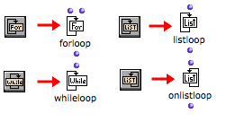

OpenMusic DocumentationHiérarchie de section : OM 6.6 User Manual > Visual Programming II > Iterations: OMLoop > Iterators
OpenMusic DocumentationHiérarchie de section : OM 6.6 User Manual > Visual Programming II > Iterations: OMLoop > Iterators
Navigation : page précédente | page suivante
Attention, votre navigateur ne supporte pas le javascript ou celui-ci à été désactivé. Certaines fonctionnalités de ce guide sont restreintes.
Iterators
Function
An iterative operation must be driven by an enumeration , or at least stopped at some point by a given condition . In an OMLoop, this control is enabled by four iterators :
|
|
|
|
Iterators can enumerate items in lists, but above all, they can stop the OMloop once this enumeration is over. This is why a loop must always have at least one iterator : otherwise, it goes on with infinite iterations.
If several iterators are used simultaneously, the loop stops as soon as one of them stops.
Adding Iterators

|
To add an iterator in the editor :
|
All the examples provided here make use the eachtime and finally evaluators of OMLoop :
Références :
Plan :
Navigation : page précédente | page suivante
A propos...(c) Ircam - Centre Pompidou